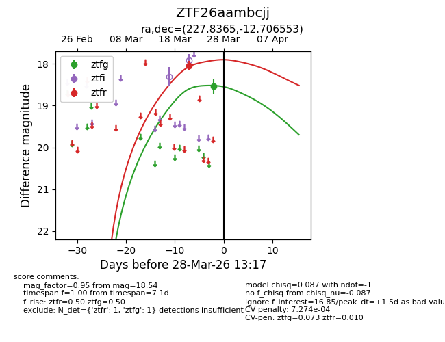
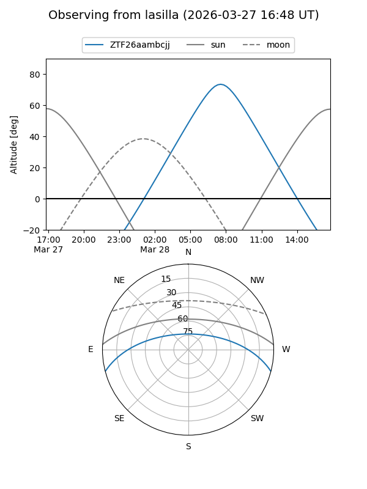
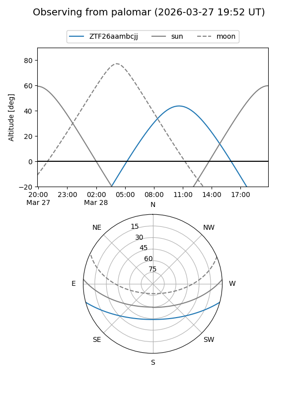
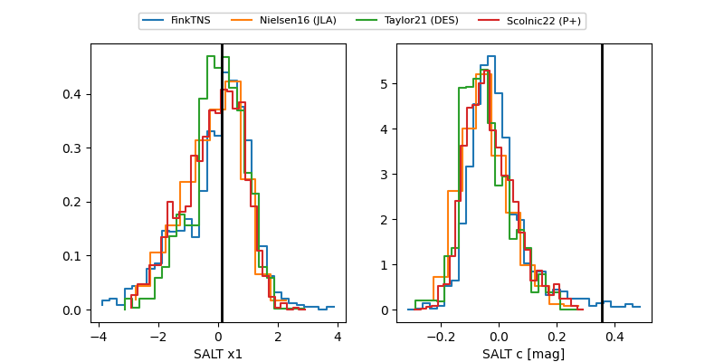

ZTF26aambcjj
Target ZTF26aambcjj at 2026-03-28 13:20
Aliases and brokers:
FINK: link
Lasair: link
ALeRCE: link
alt names
ZTF26aambcjj (ztf,fink_ztf)
Coordinates:
equatorial (ra, dec) = 227.8365,-12.70655
equatorial (HMS+DMS) = 15:11:20.76,-12:42:23.59
galactic (l, b) = (347.8794,+37.66789)
Flags:
likely cv
Photometry:
last ztfg=18.54, ztfr=18.04
1 ztfg, 1 ztfr detections
Lightcurve

Visibility


Additional plots
